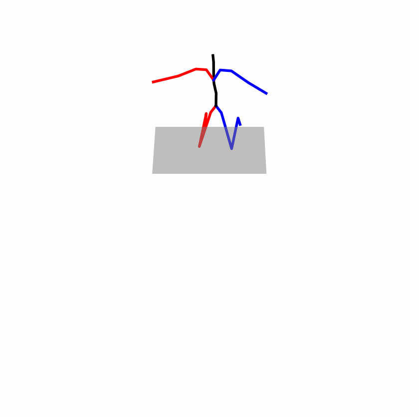
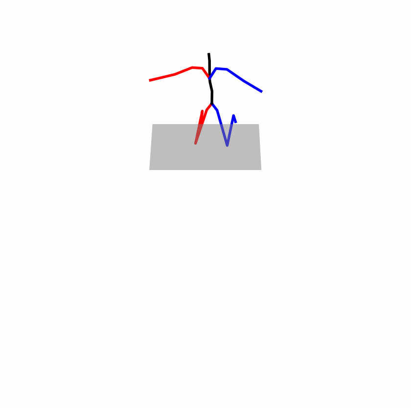
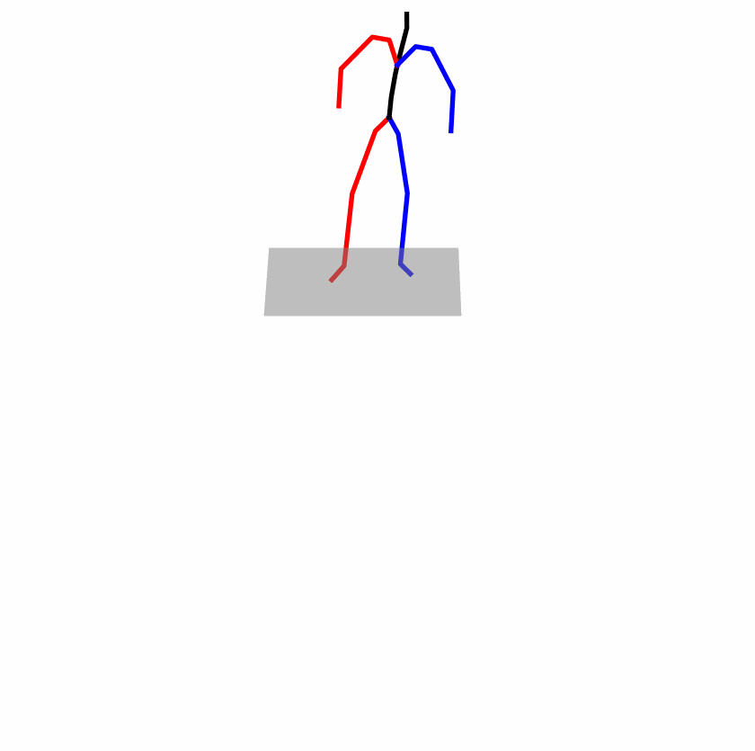
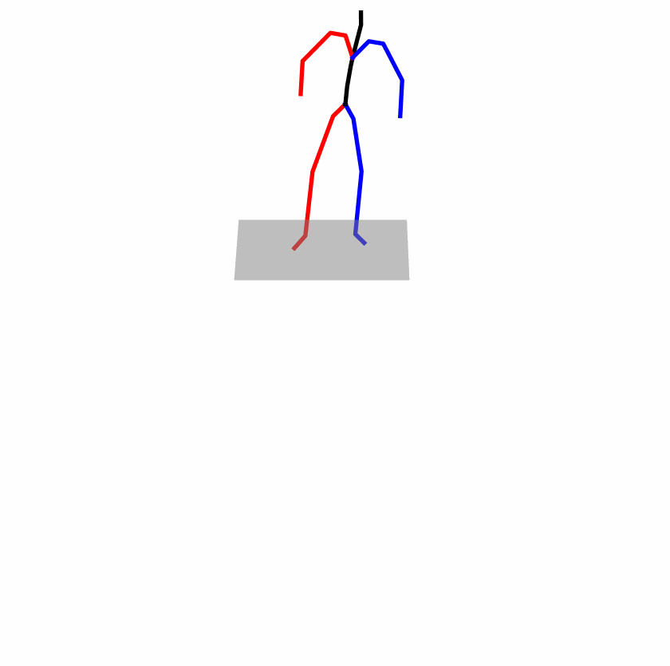
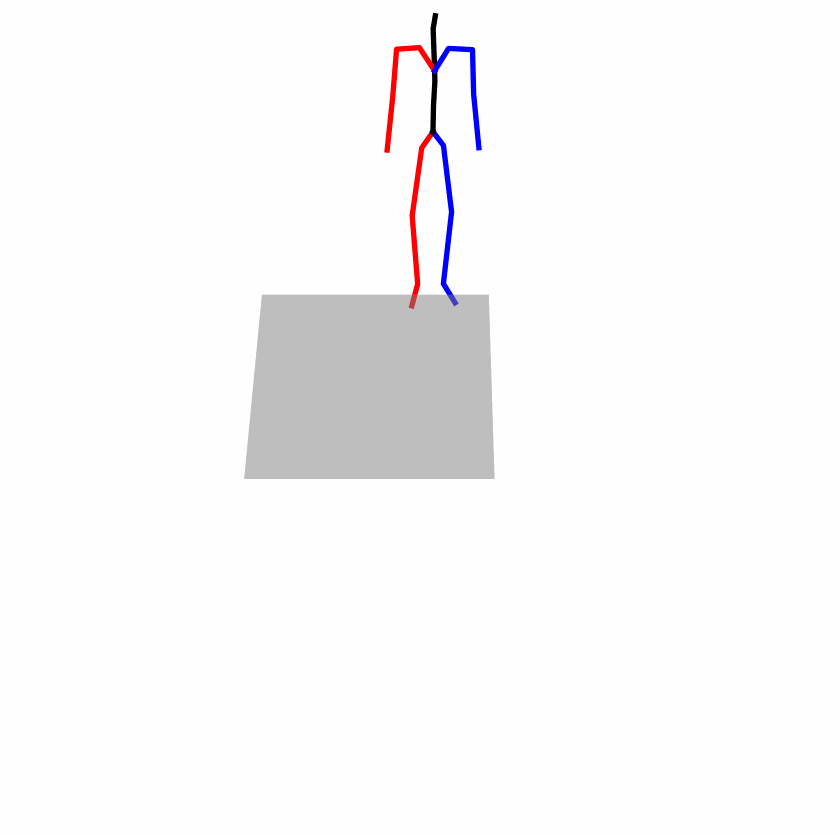
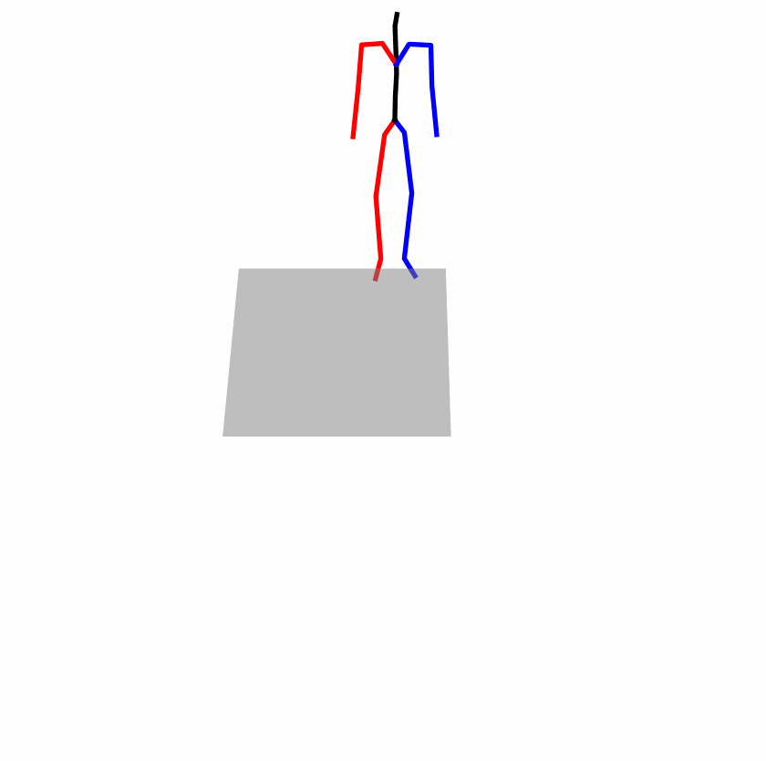

Our Approach

Attention Stability. For the original text input, we can easily observe the model's attention vector for the text. This attention vector reflects the model's attentional ranking of the text, indicating the importance of each word to the text encoder's prediction. We hope a stable attention vector maintains a consistent ranking even after perturbations.
Prediction Robustness. Even with stable attention, we still cannot achieve stable results due to the change in text embeddings when facing perturbations, even with similar attention vectors. This requires us to impose further restrictions on the model's predictions. Specifically, in the face of perturbations, the model's prediction should remain consistent with the original distribution, meaning the model's output should be robust to perturbations.
Balancing Accuracy and Robustness Trade-off. Accuracy and robustness are naturally in a trade-off relationship. Our objective is to bolster stability while minimizing the decline in model accuracy, thereby mitigating catastrophic errors arising from input perturbations. Consequently, we require a mechanism to uphold the model's performance concerning the original input.


 


 



 
